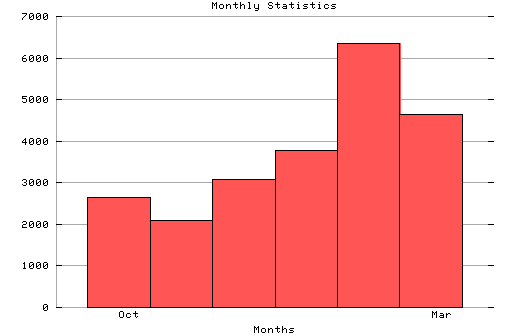

HTTP Server Monthly Statistics
Covers: 10/16/95 to 03/11/96 (148 days).
All dates are in local time.
Oct (10/16/95): 2655 : ### Nov (11/01/95): 2089 : ## Dec (12/01/95): 3085 : ### Jan (01/01/96): 3783 : #### Feb (02/01/96): 6355 : ###### Mar (03/01/96): 4631 : #####

Statistics generated at Mon Mar 11 03:13:25 MET 1996, (C) Schibsted Nett AS, 1995.